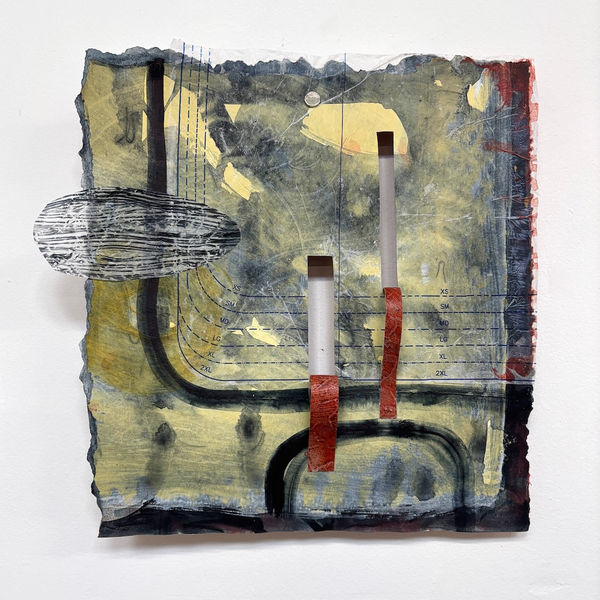

Laura Van Duren Residency
February 1 - March 1, 2025
Closing March 15, 2025, 1-4PM
Artist's talk 2PM
Laura Van Duren's residency at Dream Farm Commons will investigate the intricate relationship between the mind and body, exploring the concept of Embodied Cognition and the unconscious interplay between our physical and mental states. Drawing inspiration from philosopher Andy Clark's provocative question, "Where does the mind end and the world begin?"
In her residency at DFC Laura investigates ideas of Repair, Restoration and Resilience through a practice of play in the face of uncertainty, as a response to her own internal world and the external entropy of the present day. The artist, like so many of us, is searching for positioning in shifting terrain aka how we artistically, personally and politically engage with the current madness of our nation and world.
Through a process-driven approach involving cutting, drawing, sewing, and reassembling, Van Duren aims to create visual representations of our adaptive responses to the external world. These interventions serve as metaphors for the ways in which our bodies shape our understanding and emotional perception of our surroundings. Ultimately, this project seeks to provide a tangible exploration of the anxiety and uncertainty that permeate our rapidly changing world.
For more information about the work of Laura Van Duren visit her website or instagram